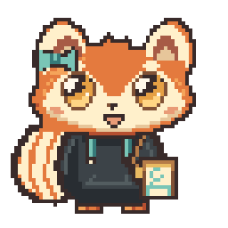
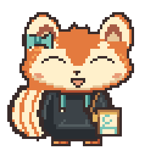

Idle

Approved face B. First production animation review. Every source frame is 64 x 64. All loops use integer pixel movement.


Front, side, back, portrait and expression PNGs are in the adjacent production asset folder.